Método Zion · Marco Zero
Marco Zero
A visão de toda a jornada
Você sai sabendo onde está, o nome da sua dor e por qual pilar começar. No fim, você gera a página 0 do seu Dossiê: o seu diagnóstico prévio.
O que você vai fazer aqui
Assistir, responder e sair com a página 0
Assistir
Dois vídeos curtos, um por bloco. Eles aparecem aqui dentro, no ponto certo.
Responder
Uma pergunta por tela, logo depois do trecho que a explica. Cada resposta fica salva na hora, neste aparelho.
Sair com o diagnóstico
No fim, a ferramenta do diagnóstico abre aqui dentro, já com as suas respostas. Você baixa a página 0 do seu Dossiê em PDF.
DicaTenha papel e caneta. Use os botões lá embaixo, ou as setas do teclado, para avançar. Onde não souber, marque "Não sei": também é diagnóstico.
Vídeo 1 de 2 · Bloco 1 · A visão, quem somos e o setor
O Marco Zero em três respostas
O que, por quê e o que você leva
- O que: o setor de hospedagem por inteiro, o que trouxe você até aqui e a jornada que transforma um terreno, uma ideia ou um empreendimento em um destino turístico de sucesso.
- Por quê: quase todo mundo começa pela obra. E a obra é o último passo.
- O resultado: você sai sabendo onde está e por onde começar.
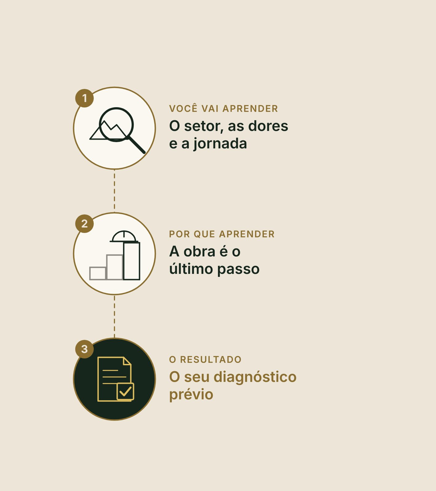
Quiz relâmpago · clique numa resposta
Qual é o último passo de um empreendimento de hospedagem?
Quase todo mundo começa pela obra, e a obra é o último passo. Quem começa pelo fim descobre no meio do caminho o que faltou.
Tudo começa assim
Tudo começa de uma visão
Se você está aqui, alguma coisa acendeu: um produto que você viu, um terreno parado, uma ideia. Isso não é distante. Existe um caminho, que outras pessoas já percorreram, erraram e refizeram.
- Por que criamos este curso? Muitos donos de áreas, e muita gente que quer entrar no setor, não sabiam fazer essa leitura: como fazer, quanto gastar e quanto retorna.
- E também para abençoar vidas e expandir o setor: que você prospere com o que tem nas mãos, e que quem se hospeda encontre descanso, bem-estar e natureza.
Antes de investir um real
Cinco perguntas
- Visão: o que você vai construir?
- Demanda: existe mercado para isso?
- Tempo: em quanto tempo?
- Modo: com que conhecimento e estratégia?
- Resultado: o que isso te devolve?
Agora, uma por tela: quais você já responde com número?
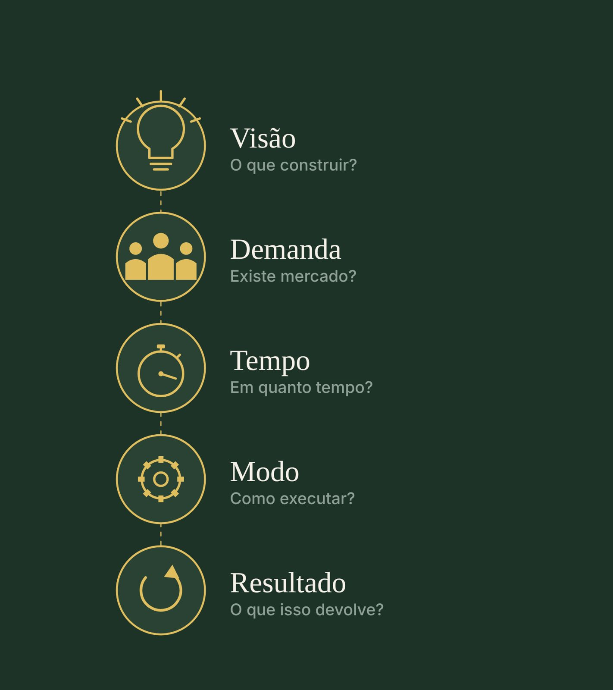
Antes de seguir, uma pergunta para você guardar
O que te trouxe até aqui?
O terreno parado
O capital sem destino
Um sócio para convencer
A dúvida de qual caminho seguir
Guarde a sua resposta. Ela volta no Bloco 2.
Quem está falando com você
O que a gente ensina, a gente opera
- O fundador da Zion, Bruno Chaerk, passou mais de vinte anos na hotelaria internacional, com a Meliá, a Barceló e a Wyndham, na Espanha, nas Canárias e nas Baleares.
- Ele participou de reconversões de hotéis e até de um destino inteiro, que saiu do turismo de excesso para o turismo de lifestyle e de luxo. A lição: as grandes redes estruturam tudo antes de construir.
- Em 2020, nós trouxemos isso para o Brasil, num terreno vazio, sem luz, sem água, sem internet. Tínhamos o dinheiro e, mesmo assim, enfrentamos muitos contratempos. Foi fazendo do zero que o caminho virou método.
- Hoje, Bruno Chaerk é palestrante e embaixador do Clube de Negócios Hotéis e Resorts.

O Zion Bubble Glamping · as primeiras suítes bolha do Brasil
Duas sedes, dois biomas, a mesma marca

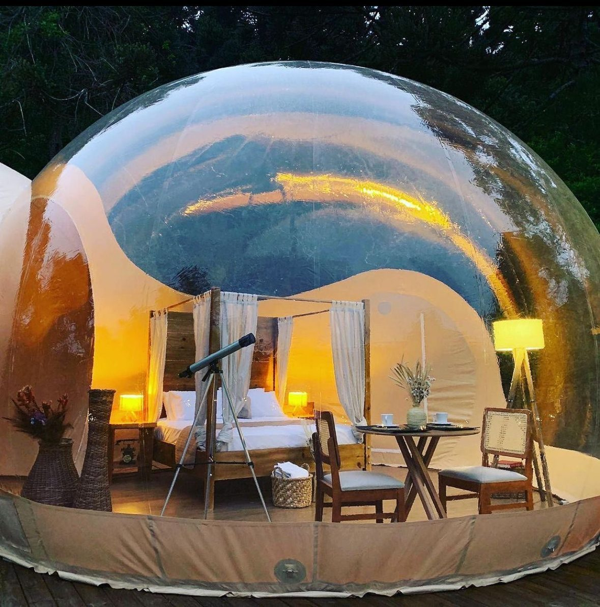


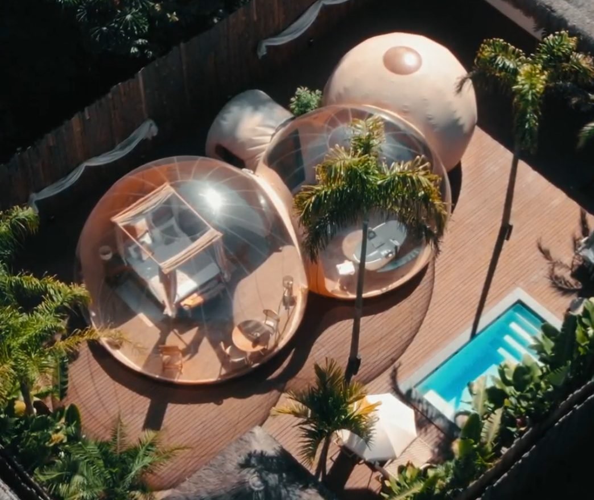
Tudo o que você vê nesta jornada vem de modelos testados e de operações próprias da Zion, que nós fazemos todos os dias.
Zion Hotel Group International
Quatro braços, um só caminho
- Desenvolvimento
- Produtos
- Gestão hoteleira
- Educação
Vinte e três destinos mapeados para expansão pelo Brasil. E o nosso papel não é o do arquiteto nem o do engenheiro. É desenvolver, estruturar e ofertar.
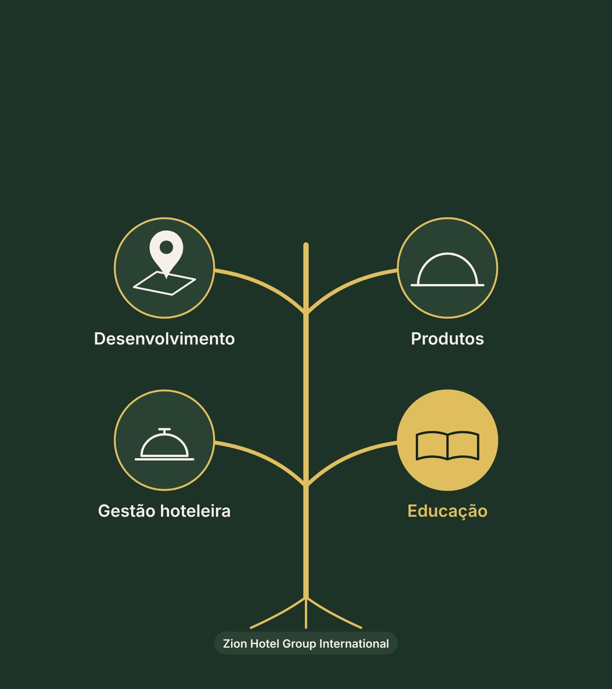
Quiz relâmpago · clique numa resposta
Qual é o papel da Zion num empreendimento de hospedagem?
O nosso papel não é o do arquiteto nem o do engenheiro. É desenvolver, estruturar e ofertar.
O que vemos no Brasil
Existe dinheiro. O que não existe são empreendimentos bem estruturados.
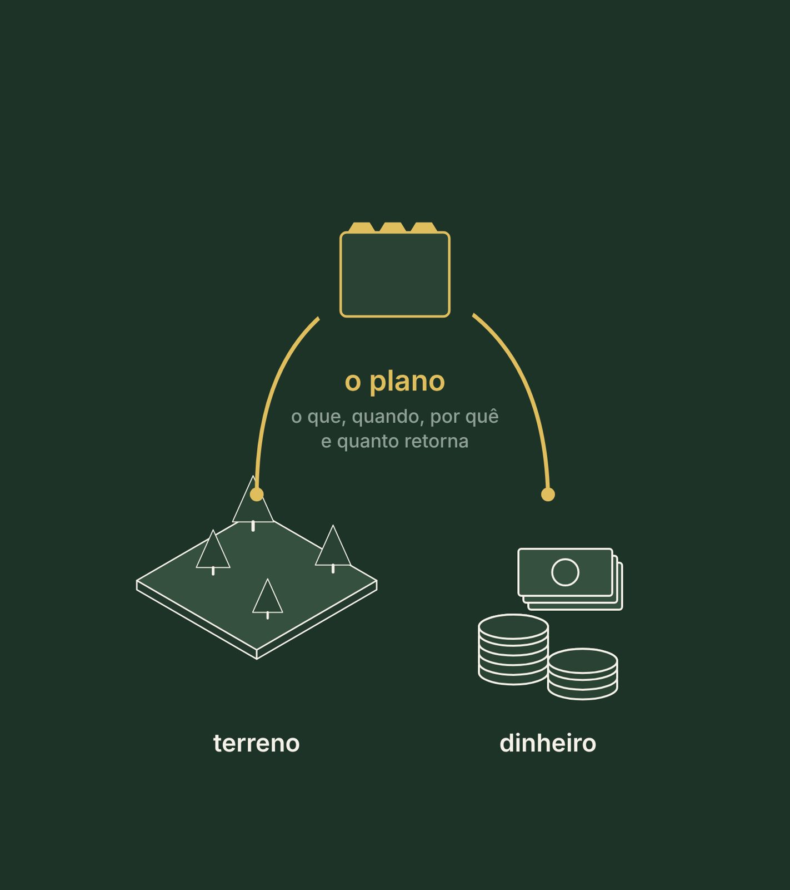
Uma síndrome muito comum no Brasil
"A minha terra é única." E ela é.
- Todo terrenista acredita que a terra dele é única, a mais bonita, a maior.
- Mas o Brasil é commodity: o que mais tem aqui é terra. E terra sem plano.
- O terrenista imagina que um dia vai descer um empresário de helicóptero, com uma mala de dinheiro, e dizer: "achei o seu terreno". Isso não vai acontecer. Sabe por quê? Porque não existe um plano.

Não é projeto arquitetônico
Um plano de execução e de viabilidade, completo
- E às vezes o empresário do helicóptero é você mesmo.
- Você tem a terra, tem o dinheiro, mas não sabe quanto vai gastar nem quanto vai voltar.
O que falta não é dinheiro. É conhecimento.
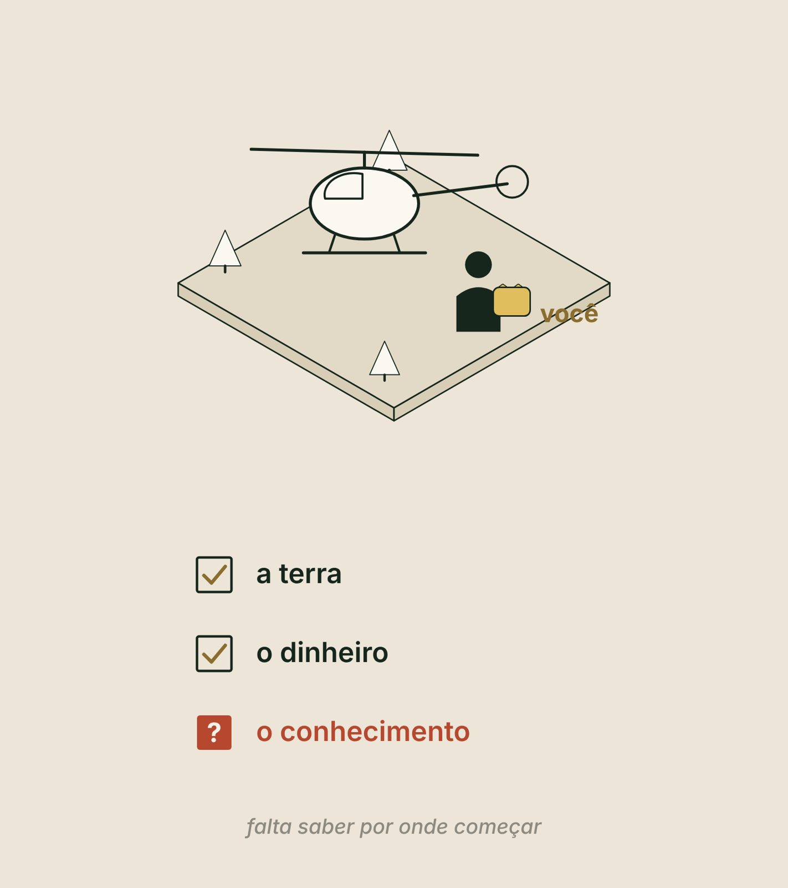
E o risco?
É arriscado? Todo negócio é.
Mas o risco se mitiga com plano.
Risco zero não existe. A pergunta certa é: o que eu faço para ficar menos arriscado?
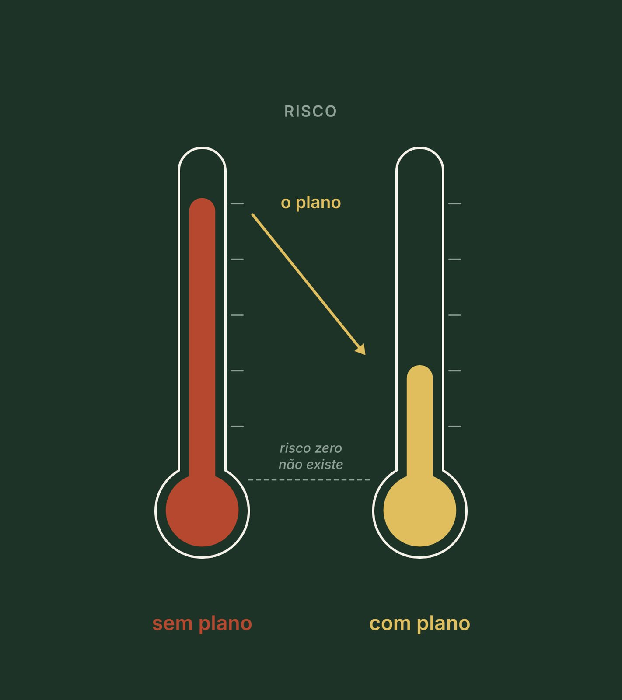
Quiz relâmpago · clique numa resposta
Por que o empresário de helicóptero, com a mala de dinheiro, não vem?
Isso não vai acontecer porque não existe um plano. E plano não é projeto arquitetônico: é um plano de execução e de viabilidade, completo.
Antes de qualquer decisão, a gente olha o mercado
As pessoas pagam pelo que vivem
Projeção não é garantia, mas mostra a direção.
Os aplicativos mudaram o jogo
O Airbnb transformou quem tinha uma casa em anfitrião
- Hoje qualquer pessoa pode operar hospedagem.
- Só que quase ninguém decide com clareza o que vai fazer com o imóvel.
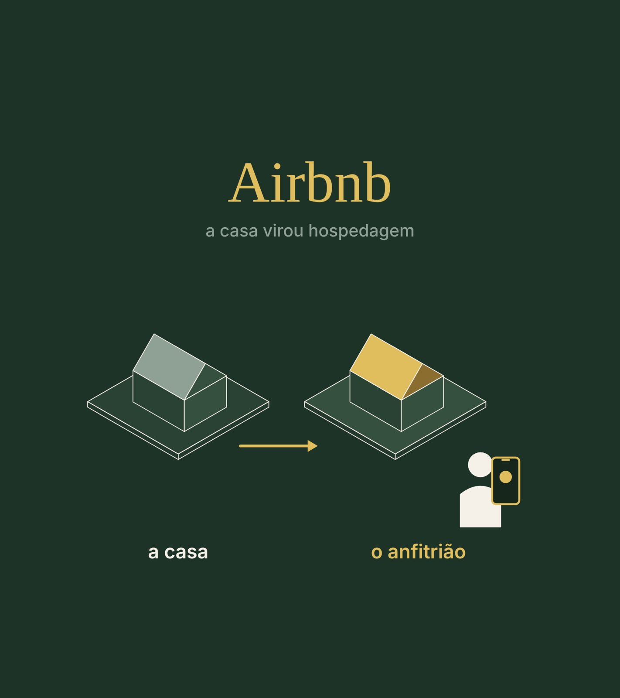
O que você vai fazer com o seu imóvel? · clique em cada cartão
Alugar, hospedar ou vender
Por temporada
Como funciona?Você aluga por temporada, sem serviço.
Com serviço
Como funciona?Você hospeda, com serviço, e cobra diária.
Unidades inteiras
Como funciona?Você vende cada unidade inteira.
Frações
Como funciona?É a multipropriedade: você vende frações do mesmo imóvel.
Cada caminho tem a sua conta, a sua lei e o seu jeito de operar.
Quiz relâmpago · clique numa resposta
Aluguel por temporada e hospedagem são a mesma coisa?
Alugar por temporada é sem serviço. Hospedar é com serviço e diária. Cada caminho tem a sua conta, a sua lei e o seu jeito de operar. No seu caso, quem confirma é o advogado, o contador ou a prefeitura.
O mapa da hospedagem
Existem muitos jeitos de hospedar
Hotel
Resort
Pousada
Hotel fazenda
Cama e café
Flat
Aluguel por temporada
Glamping
Saber o nome certo do seu negócio muda a conta e a operação.
Vamos falar do que a gente vive
O glamping não é uma bolha
- A bolha é uma das estruturas. E ela é barraca, não imóvel.
- O glamping é um conceito de hospedagem: hospedar com conforto dentro da natureza.
- Na praia, na mata, na selva ou no deserto, em bolha, em tenda ou num ofurô no meio da floresta. A estrutura muda, o conceito é o mesmo.


Quiz relâmpago · clique numa resposta
Glamping é a mesma coisa que a bolha?
A bolha é uma das estruturas. O glamping é um conceito: hospedar com conforto dentro da natureza, na praia, na mata, na selva ou no deserto.
Um negócio de hospedagem tem quatro grandes partes
O produto é só uma delas
Desenvolvimento
É aqui que o produto mora. É por aqui que começamos.
Gestão
Operação
Venda
O produto é um dos requisitos, não todo o contexto.
Pare e pense
O hóspede de hoje compra o quê?
- Paredes e uma cama, o menor preço, uma experiência ou um motivo para viajar?
- Todas são válidas.
A pergunta é: qual você escolhe para o seu negócio?
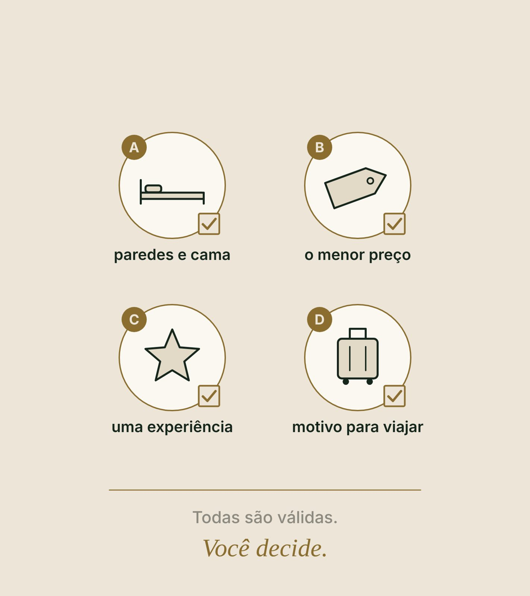
Antes do Bloco 2 · o que você já anotou
A visão, quem somos e o setor
Neste bloco: a visão que começa tudo, quem somos nós, da Zion, a síndrome do terrenista e como o setor de hospedagem funciona hoje. Onde aparece "não sei", é o seu primeiro estudo.
Vídeo 2 de 2 · Bloco 2 · As dores, a jornada e o seu diagnóstico
A pergunta mais importante
O que te trouxe até aqui?
- Tenho o terreno e não tenho o capital
- Tenho o capital e não sei o que fazer
- Preciso estruturar para entrar com um sócio, um banco ou um investidor
- Preciso de clareza para decidir
São quatro dores. Pode ser mais de uma.

Dor 1 · o milionário descapitalizado
Tenho o terreno. Não tenho o capital.
Milhões em terra e nenhum dinheiro para desenvolver.
Linha sem isca não traz peixe. O plano é a isca.
Sem ele, o sócio, o banco ou o investidor não vem.

Dor 2
Tenho o capital e não sei o que fazer
Grande parte de quem chega até nós, da Zion, já construiu. Ouviu que todo mundo estava ganhando dinheiro com chalé, gastou trezentos, quatrocentos mil reais no terreno, mais a construção, e o calendário ficou vazio.
Não errou por falta de dinheiro. Errou por decidir fora de ordem.
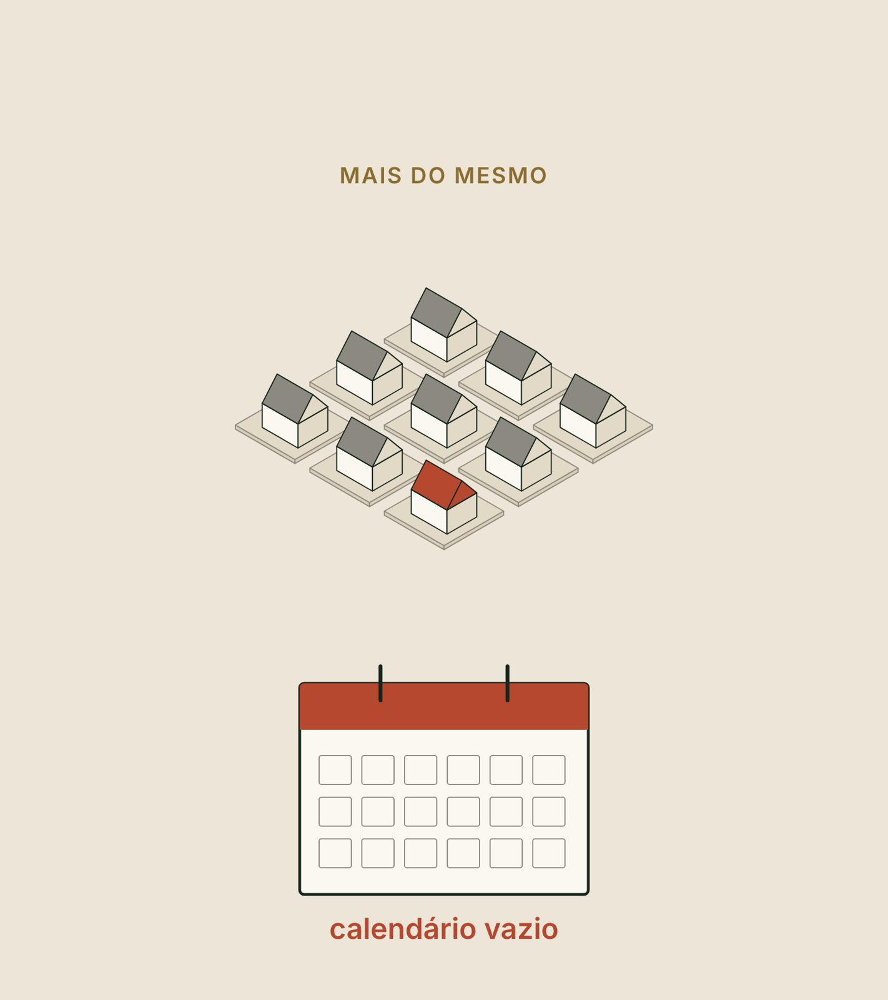
Dores 3 e 4
Preciso estruturar. Preciso de clareza.
- Dor 3: preciso estruturar para entrar com um sócio, um banco ou um investidor. Qual o melhor produto, quanto custa, quanto retorna, em quanto tempo? É isso que eles vão perguntar. Quantas você responde hoje, com número?
- Dor 4: preciso de clareza para decidir. Esse é o grande objetivo desta jornada.
Não é a Zion que decide por você. É você, com os números na mão.
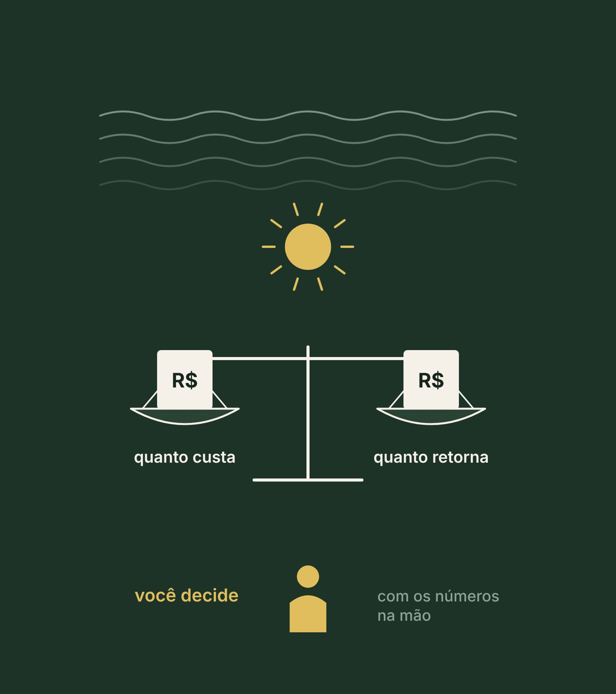
Quiz relâmpago · clique numa resposta
Quem gastou no terreno e na construção e ficou com o calendário vazio errou por quê?
Não errou por falta de dinheiro. Errou por decidir fora de ordem: foi pelo que todo mundo falava, e não por um caminho.
Você não precisa de um grande hotel para começar
Fruta alta, fruta baixa
- A fruta alta é o resort de cinquenta quartos.
- A fruta baixa é começar com uma, duas ou três unidades, testar o mercado e a operação.
Nós, da Zion, recomendamos sempre de menos a mais.
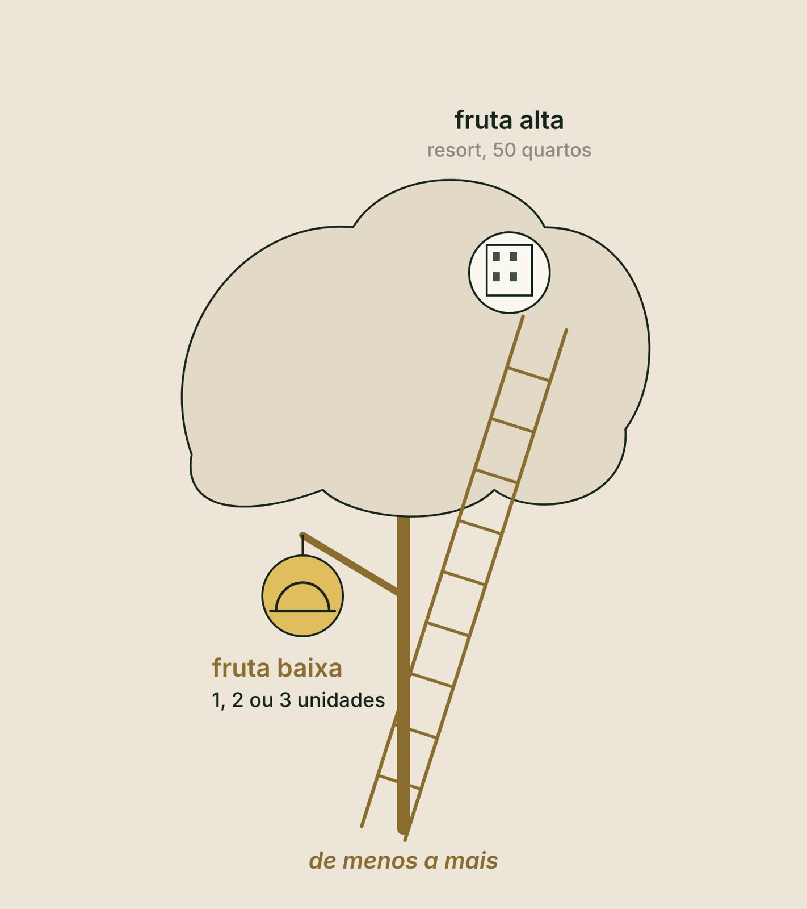
Um caso real
Rodrigo e Priscila
- Um terreno com uma casinha e muita natureza. A primeira ideia era derrubar tudo e construir dez casas.
- Mas o diferencial estava na natureza do lugar. Eles foram construindo os chalés pouco a pouco.
- O que seria uma pousadinha para surfistas virou um negócio de luxo natural, com padrão, marca e diferenciação.

A regra de Pareto · clique em cada cartão
Poucas decisões respondem por quase todo o resultado
Onde?
Qual pilar?Território e destino.
Para quem?
Qual pilar?Mercado e demanda; Produto e tipologias.
O quê?
Qual pilar?Produto e tipologias.
Em qual modelo?
Qual pilar?Modelo de negócio.
Com qual conta?
Qual pilar?Pré-viabilidade; Capital e Dossiê.
Todas vêm antes da obra.
Agora, a jornada
Quatro etapas, sete pilares
- Ler o lugar: território e mercado.
- Desenhar o produto: produto e modelo de negócio, de renda ou de venda.
- Desenhar o terreno: o masterplan faseado.
- Fechar a conta: a pré-viabilidade, o capital e o seu Dossiê de Desenvolvimento.
É esse Dossiê que um banco, um sócio, um investidor ou a Zion conseguem avaliar. E a Zion avalia cada caso.
Em cada pilar: os vídeos, os exercícios e o Faça agora, com o retorno de um mentor de IA. Gestão, operação e vendas vêm nas próximas trilhas.
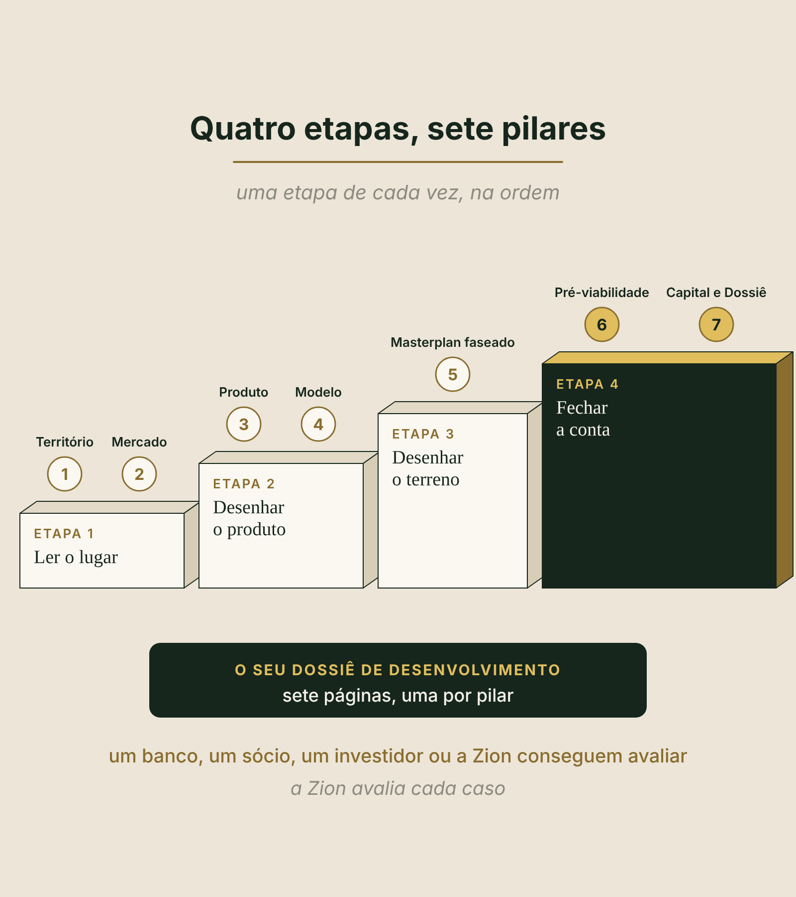
Cada pilar responde uma pergunta · clique em cada etapa
Do terreno ao Dossiê, na ordem
Clique em cada etapa: o que ela responde e a página do Dossiê que sai dela.
Agora, pilar por pilar: o que você já tem hoje, com papel ou com conta?
Quiz relâmpago · clique numa resposta
Em que etapa entra o masterplan faseado?
O masterplan faseado é a etapa 3, desenhar o terreno. Ele vem depois de ler o lugar e de desenhar o produto, e antes de fechar a conta.
Agora é com você
O seu diagnóstico prévio
- São uns seis minutos sobre a sua situação, a sua dor e a sua etapa. E você já respondeu quase tudo nesta aula.
- Onde não souber, marque "Não sei": isso também é diagnóstico.
- No final, você recebe onde está, o seu ponto mais frágil e a primeira ação para os próximos sete dias.
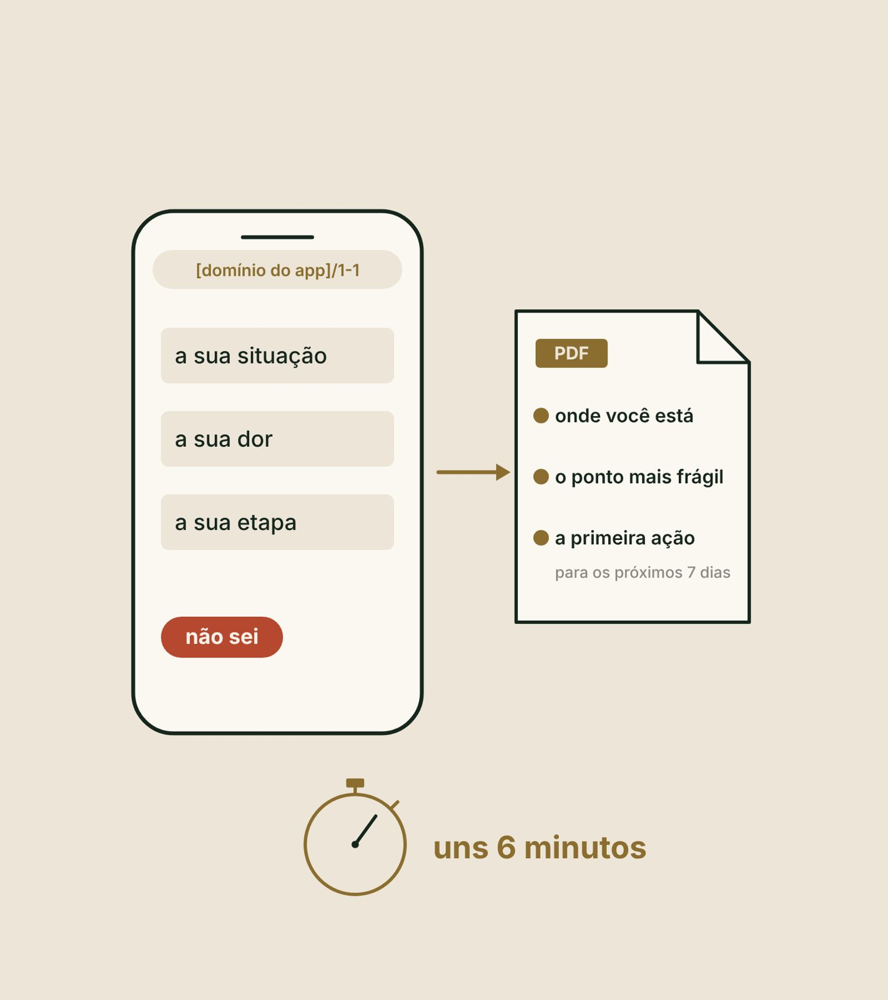
O Marco Zero em uma tela
O que ficou
- Quase todo mundo começa pela obra, e a obra é o último passo.
- Existe dinheiro. O que não existe são empreendimentos bem estruturados: o plano é a isca.
- Alugar, hospedar e vender são caminhos diferentes, cada um com a sua conta, a sua lei e o seu jeito de operar.
- De menos a mais: a fruta baixa vem primeiro, e poucas decisões, todas antes da obra, fazem quase todo o resultado.
- Quatro etapas, sete pilares, uma página do Dossiê por pilar. Você começa pela página 0.
Para a página 0 sair com o seu nome
Quem é você e onde fica o terreno
Fica salvo neste aparelho. Nada é enviado nesta tela: a ferramenta usa o seu e-mail só quando você baixar o PDF.
Faça agora · o seu diagnóstico prévio
As suas respostas já estão aqui. Confira, gere o resultado e baixe a página 0 do seu Dossiê. No fim, envie para o Land Bank da Zion.
Abrir em tela cheiaPróximo · Pilar 1
Território e destino
O checklist do seu terreno: o destino em volta, a chegada do hóspede, o chão, a água, a energia, a área que sobra e os papéis. Item por item, onde verificar e com quem.
LembreteSalve o PDF na pasta Meu Dossiê.
Conteúdo educacional. Não é oferta de investimento nem promessa de renda, retorno, ocupação, crédito, compra ou sociedade. A Zion avalia cada caso. Projeções de mercado mostram uma direção, não garantem resultado. Temas jurídicos aparecem em nível introdutório: quem confirma no seu caso é o advogado, o contador ou o cartório, o órgão ambiental ou a prefeitura.